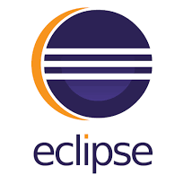
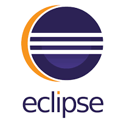

Desenvolvedor Full-Stack formado pelo Senai - SC.
Proativo, comunicativo e motivado, Carreira em desenvolvimento na área da Tecnologia da Informação, focado em Análise e Desenvolvimento de Sistemas, com experiência em gerenciamento de projetos, implementação e manutenção de sistemas, suporte técnico especializado, administração de servidores e redes.
Trabalhei em algumas aplicações com grande tráfego e visitas diárias. Possuo sólidos conhecimentos em programação funcional, DevOps, Java, HTML/CSS/JavaScript, Angular, SQL e Spring. Tenho interesse em escalabilidade de aplicações, infraestrutura, melhores práticas de desenvolvimento, TDD e BDD.
Desenvolvo tanto no front-end como no back-end. Já trabalhei em duas empresas de tecnologia, nas quais atuei como Desenvolvedor Full-Stack e Assistente de TI, atuei também na Força Aérea Brasileira por 6 anos, exercendo funções de TI, mecânica automotiva e Motorista.
Estou desenvolvendo meus conhecimentos e habilidades, visando aperfeiçoamento técnico e constante em novas tecnologias e ferramentas. Atualmente estou estudando Nodejs, React, React-Native e Javascript mais a fundo.
Gosto de aprender coisas novas,
Tenho bom nível de concentração,
Sou curioso,
Sou disciplinado,
Tenho paciência e persistência para enfrentar desafios,
Gosto de atuar na resolução de problemas.

Formação
-
Formado 2022
• ANALISE E DESENVOLVIMENTO DE SISTEMAS - JAVA/ANGULAR/ SPRING/POSTGRESQL/GRAFANA.
Faculdade de Tecnologia Senai .
-
Concluído 2017
• GESTÃO PÚBLICA
Unicessumar.
-
Concluído 2019
• MECÂNICA AUTOMOTIVA E MOTORES DIESEL
Sest Senat.
-
Incompleto 2014
• TÉCNICO EM REDES DE COMPUTADORES
Senac TI.
Experiências Profissionais
-
Maio 2022 até o momento.
Sênior sistemas – Fábrica de software Blumenau.
Desenvolvedor |
Desenvolvimento Full-Stack.
· Java · AngularJS · Eclipse · IntelliJ IDEA · Banco de dados · Node.js · JavaScript · Spring · Testes de Cenários
Apoio no desenvolvimento do módulo folha e ponto nova plataforma Sênior X “HCM |V” (G7). -
Maio de 2021 até maio 2022.
GRUPO NDTV - RECORD TV.
Assistente de TI
Apoiava na administração de redes e infraestrutura (monitoramento e configuração de switches Dell, HP e Cisco); administração de servidores definindo o controle de acesso e recursos (AD, DHCP); HelpDesk remote; ferramenta de monitoramento de ativos(GRAFANA JENKINS); atendimento de chamados; suporte aos usuários da sede e de todo estado.
-
Março de 2014 até Março 2020.
FORÇA AÉREA BRASILEIRA – BASE AÉREA DE FLORIANÓPOLIS.
S1 - Soldado de Primeira Classe. 2018 á 2020
Montagem e manutenção de computadores e redes; Ludo técnicos; Atendimento aos Militares; instalação e manutenção de software; técnico em Informática e arquivos sigilosos; soluções em redes; controle de acesso e recursos (AD / DHCP); Motorista Pista (2/7 GAV); Serviços de segurança das instalações, atividade de Polícia da Aeronáutica, Defesa de pontos sensíveis, prática de missões de busca e resgate, instrução a novos militares.
-
Setembro de 2020 até Abril 2021.
• CENTRO TÉCNICO AUTOMOTIVO VERONEZI
Auxiliar Mecânico
Realizava manutenção preventiva e corretiva de veículos, troca peças, troca de óleo e limpeza de motores; Auxilio na desmontagem e montagem de motores; Auxilio ao cliente quanto à substituição e aproveitamento de componentes. Laudos mecânicos e elétricos.